Objetivo: Diferenciar os tipos de rochas com base em seu processo de formação. Classificar
tipos e texturas das rochas ígneas. Compreender o processo de formação das rochas sedimentares. Analisar as
rochas metamórficas e seu processo de formação. Entender o ciclo das rochas.
Digite seu nome
Introdução
Na aula passada, conhecemos os processos externos modeladores do relevo, o
intemperismo físico e químico, além do processo de erosão pela água, vento, geleiras, dentre outros.
Nesta aula, vamos entender o ciclo das rochas, o processo pelo qual as rochas são continuamente
transformadas
dando origem a diversos tipos e usos para o homem.
Ao final, você será capaz de reconhecer, comparar e contrastar diferentes tipos de rochas, além de explicar
como
os minerais combinam-se para formar a maior parte da superfície terrestre juntamente com os agentes internos
e
externos do relevo.
O estudo das rochas e dos minerais, do qual são constituídas, envolvem um conhecimento muito amplo como
química,
física, geologia, geografia, dentre outros. A Ciência é única, embora dividida para facilitar o entendimento
da
complexidade do mundo. Vamos começar com os minerais e suas características.
A história humana e os minerais
A humanidade é dependente dos minerais e de suas propriedades desde antes da história escrita. Portanto, não
é surpresa que alguns nomes de minerais sejam baseados em línguas antigas.
Por milênios as pessoas necessitaram de um meio para produzir faíscas para iniciar um fogo. Os antigos sabiam
que uma forma de produzir faíscas era bater uma rocha dura, como o quartzo, que chamamos de sílex córneo,
com um mineral muito menos comum, da cor do ouro.
Os gregos deram o nome de “fogo” ao mineral dourado. Em grego, “fogo” é “pyr”. Esse mineral dourado é
conhecido como“pirita” por causa de sua
antiga conexão com a produção do fogo.
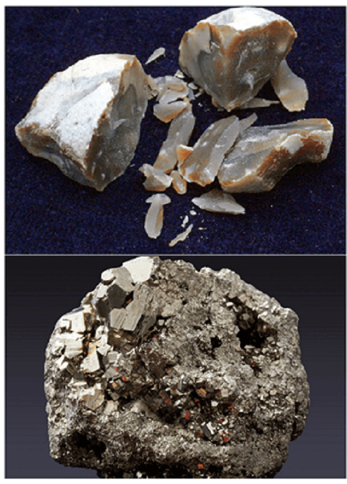
Sílex córneo constituída de quartzo. Minério Pirita. Fonte: Pixabay.com.
Eis uma ideia prática: se você estiver perdido em uma floresta, sem uma maneira de se aquecer, caso encontre
tanto pirita quanto um quartzo, você pode salvar sua vida. Friccionando os dois materiais, você gerará
faíscas que (se tiver sorte) poderá usar para começar a queimar madeira ou capim seco. E você se lembrará
desse cenário todo, simplesmente, recordando a palavra grega para fogo e sua conexão com o mineral pirita.
O nome hematita e suas riscas vermelho-cereja são pistas para o que os gregos pensavam desse
óxido de ferro.
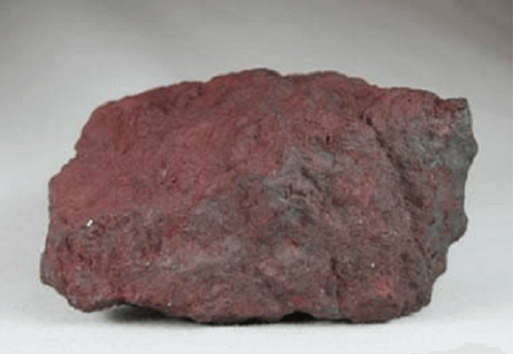
Hematita é um óxido de ferro de ocorrência frequente em solos e rochas. Fonte:
geology.com.
Em razão das riscas da hematita serem vermelhas como sangue, a conexão entre essas duas substâncias foi
feita pelos gregos. Você ainda pode ver essa conexão em palavras como hematologista (um médico que se
especializa em estudar o sangue). Algumas vezes, os gregos encontravam à hematita em estruturas longas e
finas, descendo para dentro da Terra. Eles chamaram essas estruturas cheias de minerais, associadas com a
cor vermelha, de “veios”. Esses “veios” na Terra, pensaram os gregos, eram como as veias longas e finas de
seus braços que contém sangue vermelho e corre através de seus músculos.
Embora possa parecer estranho para nós, fazer uma analogia (semelhança) hoje entre o corpo humano e a Terra,
no mundo antigo a Terra era vista de uma forma muito mais fluida. Partes da Terra eram consideradas vivas,
ou relacionadas às criaturas vivas ou deuses. Assim, a diferença entre o corpo humano e a Terra era apenas
uma questão de grau.
Muitas vezes, pelos nomes dos minerais, você pode deduzir há quanto tempo as pessoas já haviam conhecido e
identificado alguns minérios. Obviamente, a pirita e a hematita eram conhecidas há muito tempo. E porque o
sal tem feito parte da cozinha dos homens, desde tempos imemoriais, não se surpreende que o mineral halita
tenha recebido seu nome na antiga Grécia.
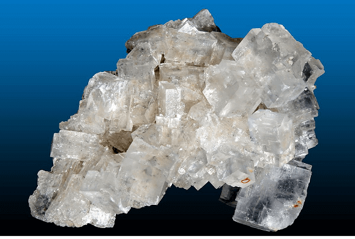
Halita, composto químico NaCl, nome do sal, produto vital para a saúde humana e bem
econômico com demanda mundial.
Fonte: Wikipedia.
O mineral rubi recebeu seu nome da palavra latina para o vermelho. Talvez mais antigo ainda em nosso
conhecimento seja a safira, que recebeu seu nome do hebraico antigo “sappir”.
Alguns minerais menores e incomuns foram descobertos mais recentemente. Normalmente, esses minerais são mais
conhecidos pelos geólogos que se especializam no estudo da mineralogia. Esses “novos” minerais recebem,
frequentemente, o nome dos cientistas que os descobriram. Por exemplo, um sobrenome com uma sonoridade
moderna seguido do sufixo “ita” denota um mineral que só recentemente tornou-se conhecido da humanidade. Mas
muitos nomes de minerais, e termos básicos de mineração como veio, justificadamente, nos lembra da herança
cultural que temos do mundo antigo. (Wicander, 2009, adaptado).
O que é um mineral?
Vimos nas aulas passadas os grandes processos da crosta terrestre como o vulcanismo e o tectonismo e a
modelagem do relevo pelos agentes externos.
É necessário, entretanto, verificar como as rochas são formadas durante esses grandes fenômenos que ocorrem
no Planeta Terra.
O conhecimento das rochas é de suma importância para o homem, tanto economicamente quanto para as
construções humanas ao longo da história.
A mineralogia estuda a ocorrência, estrutura, propriedades, tipos de ocorrências dos
minerais na Terra. Há muito conhecimento sobre química e a estrutura atômica, que são aprofundados nessas
disciplinas na escola. Essas ciências nos oferecem, portanto, bastante conhecimento sobre a formação das
rochas.
Os cientistas definem o mineral como um sólido inorgânico, de ocorrência natural, com
estruturas cristalinas específicas e composições químicas fixas ou variáveis. Um mineral é constituído de
átomos, que são pequenas unidades de matéria que se combinam por meio de reações químicas.
Como os átomos se combinam para formar minerais?
De modo simplificado, os átomos dos elementos quando estão mergulhados no magma se encontram separados um do
outro. Quando o magma chega à superfície através da lava, os átomos se agrupam devido a solidificação e se
cristalizam com uma estrutura que se repete.
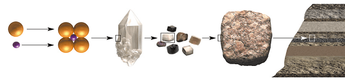
Elementos químicos e aglomerações. Fonte: Fredette (2007).
Essa combinação, portanto, dos elementos químicos é o ponto de partida para a formação dos minerais.
Primeiro há uma estrutura molecular base, uma malha elementar que se aglomera a outras malhas, formando o
cristal. Nesse caso, o próprio peso da rocha fez com que os diversos cristais se associassem produzindo a
rocha formado de pequenos sedimentos.
Mas em outras rochas, os minerais podem aparecer após sua a lava se resfriar, como no caso abaixo, em que os
mineradores encontram o mineral ametista encrustado em uma rocha que surgiu das profundezas da crosta e se
resfriou na superfície.
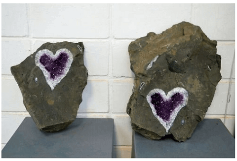
Fonte: Mineradores encontraram cristal de ametista raro em forma de coração.
https://www.sonoticiaboa.com.br
O que é uma Rocha?
Já uma rocha é formada por um conjunto de minerais agregados e ocorrência natural. Quando a lava se resfria,
por exemplo, e se torna sólida, é possível identificar tipos de minerais em sua composição, como é o caso da
rocha granito.
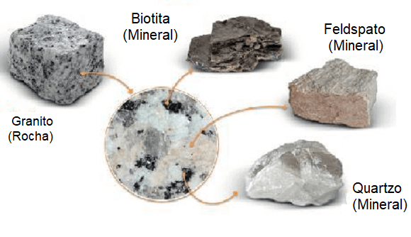
Fonte: Organizado pelo autor.
O granito possui minerais grossos que podem ser vistos a olho nu, como o quartzo, o feldspato, biotita, além
de outros dependendo de seu processo de formação. É possível ver esse tipo de rocha na mesa de jantar de
muitas casas ou na pia da cozinha.
Outros tipos de rochas não surgem das profundezas do magma. Após resfriadas elas são atingidas pelos
processos de intemperismo e erosão, (visto na aula sobre os agentes externos do relevo), e são formadas pela
acumulação de sedimentos, como a rocha arenito. Essas rochas, geralmente, são marcadas pela estratificação,
isto é, diferentes camadas que compõem essas rochas revelando idades diferentes de formação.
Desses dois tipos de rochas, as surgidas do magma e as surgidas a partir de sedimentos, existe um terceiro
tipo resultado do aumento de temperatura e pressão. Elas mudam de forma e, por isso, são chamadas de
metamórficas.
A partir disso, apresentam nova composição e características, por exemplo, a transformação do calcário (rocha
sedimentar) em mármore. Esse processo ocorre, em geral, junto as placas tectônicas e em movimentos
convergentes das placas onde se desenvolvem as grandes cadeias de montanhas, como os Andes e os Himalaias.
Qual a importância desse tipo de estudo para o conhecimento do Planeta?
Entender o que uma rocha é e suas características nos permite descobrir sua origem. Assim podemos conhecer
melhor o Planeta em que vivemos e encontrar distintos minerais e combustíveis, além de evitar problemas
ambientais. Por exemplo, o petróleo, o gás e o carvão mineral são rochas sedimentares e de grande valor
econômico para a sociedade.
O conhecimento dos tipos de rochas nos permite avaliar novas reservas minerais como a de ferro, alumínio ou
ouro e efetivar planos para reduzir a degradação ambiental, a erosão e a poluição.
Portanto, vamos conhecer os principais tipos de rochas: a magmática, a sedimentar e a metamórfica, suas
características e sua importância para o Planeta e para a sociedade. Veja os grandes grupos de rochas
existentes no Planeta:
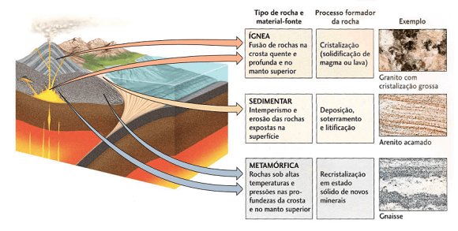
Fonte: Press (2006, p. 105).
Rochas magmáticas ou ígneas
As rochas magmáticas são também chamadas de ígneas (do latim “ignis” que significa “fogo”) e são formadas
através do resfriamento do magma tanto no interior da crosta como quando o magma extravasa para à superfície
através de lavas.
Sabemos que o magma consiste em rocha derretida, gases dissolvidos e cristais de diversos minerais nas
profundidades da crosta terrestre e próxima ao manto superior, onde as temperaturas atingem cerca de 700ºC,
suficiente para fundir as rochas.
Há momentos em que o magma se resfria antes de sair de um vulcão no interior da própria crosta. Nesse
exemplo, os minerais como quartzo, mica ou feldspato encontram-se separados na rocha derretida e à medida em
que a temperatura diminui, os cristais tendem a se agrupar e a crescer alguns milímetros. A rocha nesse caso
tem uma granulação grossa, isto é, podemos ver a olho nu os minerais que as formam.
Já quando o magma extravasa para a superfície através de lava, ele resfria rapidamente e não resta tempo
suficiente para os cristais dessas rochas crescerem. Essas são rochas possuem, portanto, granulação fina,
porque formaram-se fora da crosta terrestre. As rochas formadas dentro da crosta são chamadas de intrusivas
e as rochas formadas no exterior, são denominadas de extrusivas.
Rochas ígneas intrusivas
As rochas intrusivas resultam do resfriamento do magma em partes profundas da crosta terrestre. Também
chamadas de plutônicas ou abissais. Ex. Granito, usado para calçamento, pedras ornamentais, brita para
concreto, dentre inúmeros outros usos. Veja:
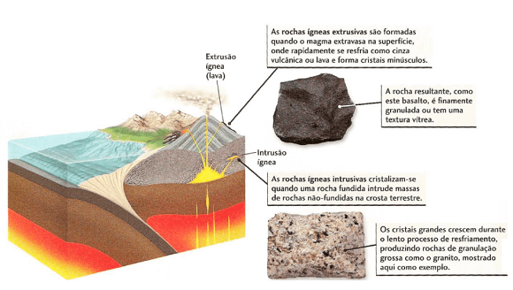
Formação de rochas ígneas extrusivas e intrusivas. Fonte: Press (2006, p. 106).
Na figura acima, o granito foi resfriado dentro da crosta. É possível visualizar seus cristais porque são
grandes. Justamente a composição mineral, o tamanho dos cristais e a
textura são utilizados para classificar os diferentes tipos de rocha. Vejamos o exemplo do
granito.
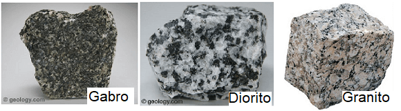
Fonte: geology.com. Wikipédia, organizado pelo autor.
As diferenças entre a composição do magma afetam o modo como as rochas são cristalizadas. As rochas
graníticas possuem uma colorização clara e contém um alto taxa de sílica em sua composição, além de minerais
como o quartzo, feldspato, mica, biotita, dentre outras variações.
Teste sua observação
Na foto acima é possível onde está destacado o Gabro, o Diorito e o Granito, podemos observar que tipo de
padrão?
Rochas ígneas extrusivas
Por outro lado, há rochas que se formam através do rápido resfriamento do magma quando este chega à
superfície por meio de erupções vulcânicas. Um exemplo clássico é a rocha basalto, muito utilizada como
pedra britada para uso asfáltico, para concretos e lastros de ferrovias.
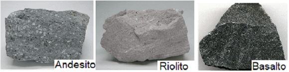
Fonte: geology.com. Wikipédia.
As rochas Andesito, Riolito e o Basalto, por exemplo, possui uma textura com granulação fina, o que
dificulta a visualização de seus cristais. Às vezes, o resfriamento é tão rápido que os cristais nem se quer
são formados, como no caso da rocha de vidro vulcânica Obsidiana.
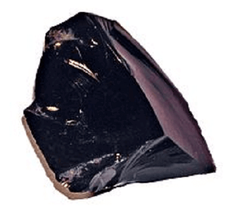
Mineral Obsidiana. Fonte: Wikipedia.
A rocha Obsidiana possui um aspecto vítreo devido sua composição de mais de 70% de sílica, o que devido a sua
viscosidade impede a formação de cristais. Nesse caso, a Obsidiana pode ser considerada um mineraloide, uma
vez que não possui uma estrutura cristalina, típica dos minerais.
Existem também rochas intermediárias chamadas de porfiríticas, que possuem cristais grandes e pequenos na
mesma formação rochosa. Isso se deve ao resfriamento do magma no início de forma lenta, porém devido a
movimentação da crosta ou uma erupção repentina, o magma remanescente se resfria rapidamente e forma
cristais menores.
Como o magma contém gases dissolvidos e que escapam quando a pressão diminui, pode ocorrer buracos nas rochas
tal como uma esponja, conhecidas como pedra-pomes, muito utilizada na indústria de cosméticos.
Aliás, pedra é um nome utilizada em geral para se referir a um fragmento de rocha.
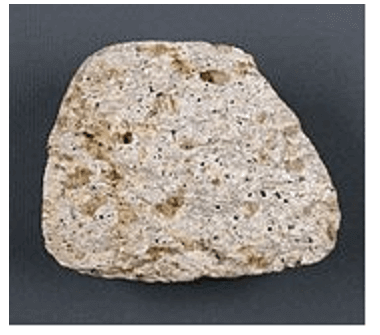
Pedra-Pomes. Fonte: Wikipedia.
O estudo das rochas ígneas, portanto, tem muita relação com as possibilidades de exploração recursos
minerais.
Rochas ígneas como recurso ao ser humano
Além da fascinação que as rochas provocam, tanto pela sua força, durabilidade e beleza, ou pelo seu uso na
construção civil, fabricação de joias, ornamentos como calçadas, soleiras de portas, tampo de mesas, dentre
outras utilidades, o estudo das rochas ígneas se destacam pelo seu potencial econômico.
Há minerais formados sob determinadas circunstâncias e utilizados para render lucro, o qual chamamos de
minérios. Seus cristais frequentemente ocorrem nas intrusões das rochas ígneas.
Durante a cristalização dos minerais no magma pode ocorrer a infiltração nas cavidades das rochas de minerais
como ouro, prata, diamantes, chumbo, lítio, nióbio, dentre outros.
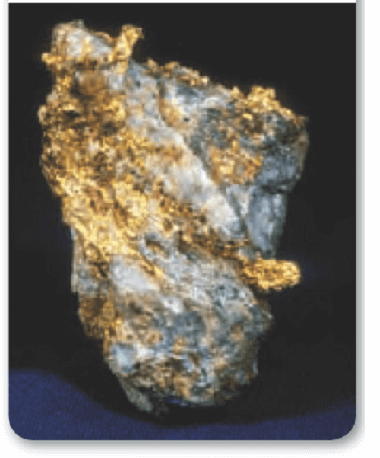
Ouro e Quartzo são extraídos das minas juntos. Os dois são posteriormente separados.
Fonte: Borrero (2008, p. 121).
Na região da África do Sul, Kimberly, foi identificado pela primeira vez rochas com uma
variedade de diamantes. Eles são formados no interior da crosta e no manto em uma profundidade de
aproximadamente de 150 a 300 km, sob alta pressão.
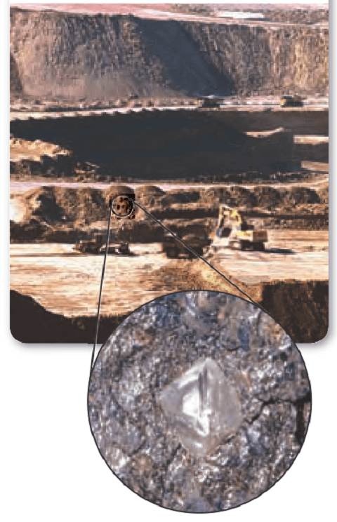
Fonte: Borrero (2008, p. 122).
A maioria das minas de diamante estão localizadas na África do Sul, no parque de Richtersveld, na cidade do
Cabo, com uma paisagem desértica, com planícies arenosas e montanhas escarpadas.
Teste seu conhecimento
Você deve estar se perguntando como o granito surgiu na superfície se ele foi formado no interior da crosta
terrestre?
Teste seu conhecimento
A classificação das rochas ígneas ou metamórficas estão baseadas em três principais características, são
elas:
Rochas sedimentares
Muitas rochas não são formadas diretamente pelo resfriamento do magma ou expelidas por erupções vulcânicas.
Veja a imagem abaixo:
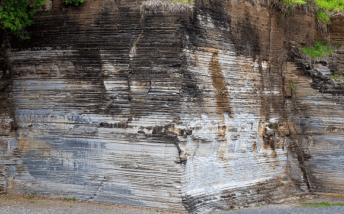
Parque Geológico do Varvito. Fonte:
https://itu.sp.gov.br/
meio-ambiente/parque-geologico-do-varvito/
O que mais chama à atenção nesta imagem de uma rocha no Parque do Varvito, em Itu, Estado de São Paulo?
A formação de camadas umas sobre as outras é um fato importante e envolve tempo e diferentes tipos de
sedimentos.
Nesta rocha, especificamente, as camadas foram formadas pela deposição de sedimentos das geleiras cerca de
360 e 270 milhões de anos, no supercontinente Gondwana.
As rochas sedimentares são as mais comuns em muitas regiões do Planeta e formam muitas paisagens com
características próprias.
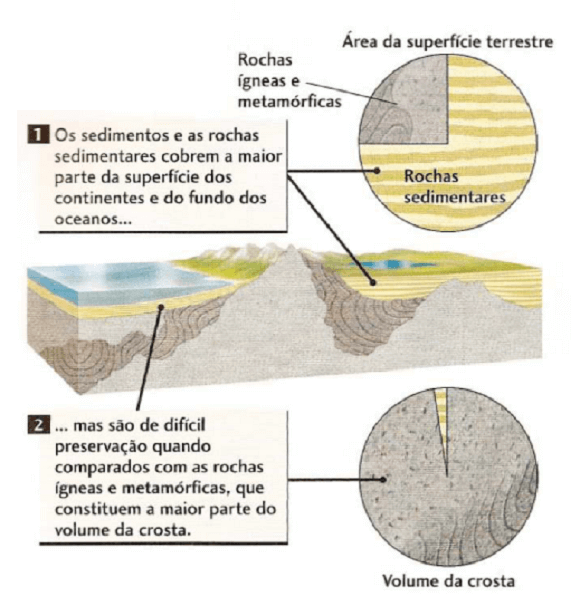
Os sedimentos e as rochas sedimentares cobrem a maior parte da superfície dos continentes
e do fundo dos oceanos. Fonte: Press (2006, p. 108).
As rochas magmáticas e metamórficas formam mais de 70% da crosta terrestre. Entretanto, a maior parte dessas
rochas estão soterradas na crosta. As rochas sedimentares, por sua vez, cobrem as outras rochas por serem
resultado do intemperismo. É como se as rochas sedimentares fossem uma capa para um sofá, ou seja, embora
cubra toda a superfície, não constitui o seu volume total.
As rochas sedimentares são formadas a partir do intemperismo, isto é, pela desagregação
química e física de sedimentos como areia, argila, seixos (cascalho) e, posteriormente, transportados pela
erosão e, finalmente, depositados e convertidos em rocha por um processo chamado de
litificação.
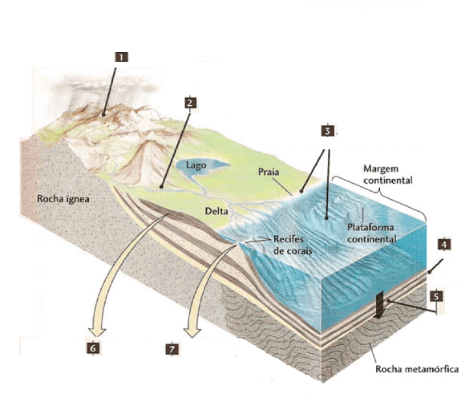
Fonte: Press (2006, p. 109).
Vejamos como o intemperismo atua para formar as rochas sedimentares. Seguindo a figura anterior, temos que:
1 – As partículas de rocha são geradas pelo intemperismo.
2 – transportadas morro abaixo pela erosão.
3 – e depositadas como camadas de sedimento no solo ou água.
4 – onde elas formam camadas paralelas ou estratificação.
5 – Os sedimentos soterrados litificam-se pela compactação e cimentação.
6 – Os sedimentos clásticos são compostos por partículas depositadas de areia, silte e cascalho.
7 – Os sedimentos químicos e bioquímicos são precipitados no mar ou compostos por recife de corais e conchas.
Os sedimentos, como vimos, surgem do intemperismo químico e físico, que desintegram as rochas. Juntamente com
esse processo cabe à erosão transportá-los para outros locais.
Os sedimentos “quebrados” como grão de areia, partículas de granito são chamados de
clásticos. Outros sedimentos são derivados de intemperismo químico e são novas substâncias
como a calcita na formação de cavernas. E temos rochas de origem orgânica formado a partir de restos de
animais e vegetais (será visto na aula sobre recursos minerais com mais detalhes) Após isso temos a
litificação.
Litificação
É no processo de litificação que a formação da rocha sedimentar vai realmente se completar.
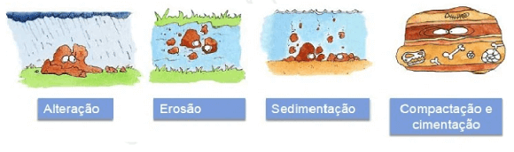
Fonte: Pinterest.
Na compactação, os grãos são unidos pelo peso das próprias camadas de sedimentos,
geralmente, “apertando” a rocha e reduzindo seu volume de água, como no exemplo da argila.
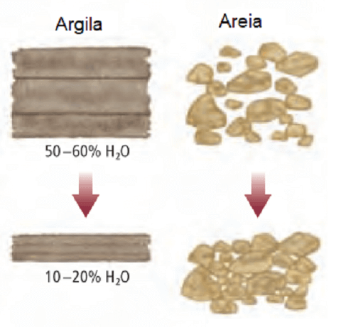
Fonte: Borrero (2008, p. 137).
Já a areia não compacta da mesma forma do que a argila. Os grãos de quartzo não se deformam quando são
enterrados e possuem espaços vazios em sua estrutura. O processo que une os grãos de areia e forma o
arenito, por exemplo, é a cimentação. Isso ocorre quando minerais dissolvidos pela água
corrente preenchem os espaços desses grãos e atuam como um cimento. É comum ver pedaços de conchas
solidificadas por litificação em rochas calcárias,
Um dos aspectos mais importantes das rochas sedimentares é revelar as evidências do passado através de
fósseis.
Os fósseis são, grosso modo, restos de organismos animais ou vegetais que foram preservados ao longo do
tempo. As condições mais favoráveis para a formação de restos desses organismos vivos ocorrem junto às
praias ou em mares pouco profundos. Quando os rios lançam neles as suas águas lodosas ou as tempestades lhes
revolvem o lodo do fundo, ficam suspensas na água muitas partículas minerais. Tais partículas depositam-se
gradualmente, recobrindo animais e vegetais vivos ou mortos. Depois, novas camadas de lodo e outros
materiais sedimentares vão-se depositando sobre as primeiras, devido a posteriores tempestades e cheias. Com
o tempo e as pressões que as camadas superiores vão exercendo, as camadas inferiores de sedimento
convertem-se em rochas compacta.
Observe a formação de uma fossilização dos grandes répteis da era Mesozoica:
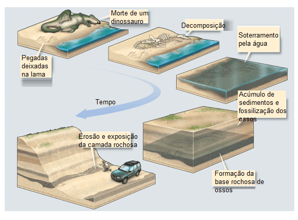
Estágios na fossilização de um dinossauro. Fonte: Marshak (2015, p. 421, Adaptado).
O estudo dos fósseis, dentre outras coisas, contribui para o melhor conhecimento de regiões geográficas
distantes, principalmente em relação a recursos como tipos de rochas sedimentares e reservas de petróleo e
gás natural.
Mas o que acontece com uma rocha preexistente se for submetida a altas temperaturas e pressão? Elas mudarão
de forma?
Rochas metamórficas
Tal como um preparo de um bolo ou de um pão, em que distintos ingredientes no recipiente se transformam em
algo novo, da mesma maneira as rochas, quando submetidas a altas temperaturas e pressão, formarão algo
totalmente diferente em relação as suas características, texturas, minerais etc.
A palavra metamórfica vem do grego meta, “mudança” e morfo, “forma”. Durante o
metamorfismo, os minerais não atingem o ponto de fusão, isto é, esse processo ocorre em estado sólido.
A textura, a composição mineral e química sofre intensa transformação e ocorre uma recristalização de seus
minerais. Observe a imagem abaixo:
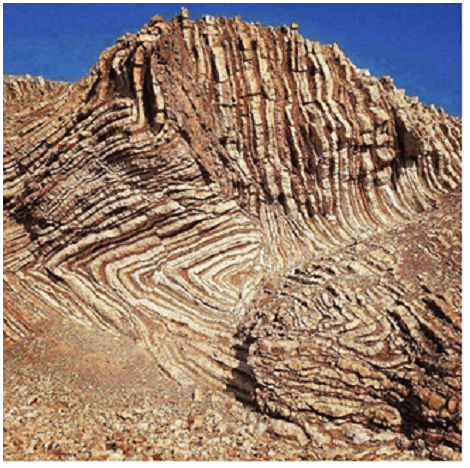
Rocha metamórfica dobrada. Fonte: Pinterest.
Imagine a intensa força que foi necessária para dobrar essas camadas de rochas na forma que elas estão hoje.
Onde estão localizadas as rochas metamórficas?
Obviamente que as rochas presentes na natureza não estão separadas em magmáticas, sedimentares ou
metamórficas de maneira fixa e organizada. Elas dependem da história geológica da região, de outros fatores
como dinâmica das placas tectônicas, formação de montanhas, intemperismo, erosão, do clima etc.
O mapeamento das rochas pode ocorrer por meio de perfurações no solo. Nos primeiros quilômetros vamos
encontrar rochas sedimentares. Ao perfurar mais fundo entre 6 e 10 km, podemos áreas com rochas ígneas e
metamórficas antigas.
Outra possibilidade são os chamados afloramentos, no qual as rochas que estão no interior da
crosta emergem à superfície devido as ações dos agentes externos do relevo.
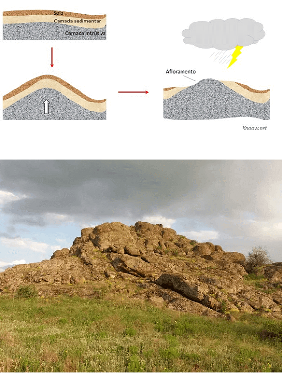
Afloramento de rocha na Ucrânia. Fonte: https://brasilescola.uol.com.br
/geografia/cratons.htm.
Os afloramentos variam conforme a região e criam, por isso, diversas paisagens.
Os tipos de metamorfismo e suas texturas
As diferentes combinações de temperatura e pressão resultam em distintos graus de metamorfismo. Um baixo grau
de metamorfismo está associado a baixas temperaturas e pressão e, logo, uma textura particular. O mesmo
ocorre com altas temperaturas e pressão.
O arranjo, o tamanho, e a forma dos minerais definem suas texturas. Estas podem ser foliadas
e não foliadas:
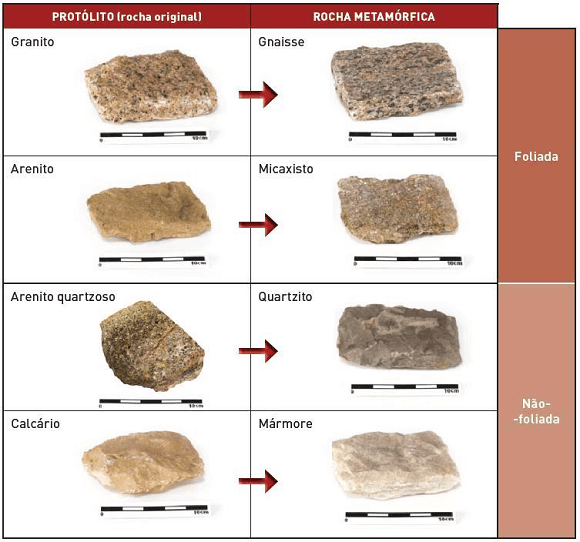
Fonte: Organizado pelo autor.
As camadas das texturas foliadas possuem uma direção em determinado plano devido ao processo
de deformação e recristalização que sofreu, como o xisto, a ardósia, o micaxisto ou o gnaisse.
Já as rochas não foliadas como o mármore e quartzito são formadas geralmente por um
mineral.
Onde ocorre esse metamorfismo?
Através das investigações científicas foram reconhecidos três grandes tipos de metamorfismo e sua área de
ocorrência: 1) metamorfismo de contato, 2) metamorfismo regional 3)
metamorfismo do assoalho oceânico. Embora estudados separadamente, esses limites não devem
ser vistos de forma isolada na realidade.
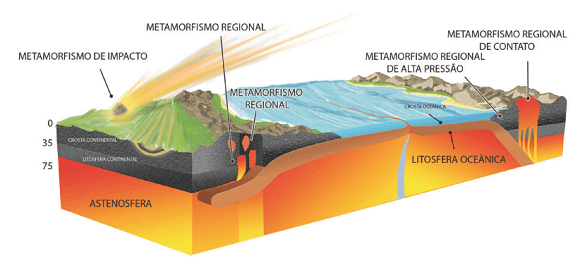
Fonte: Press (2006).
O metamorfismo de contato ocorre quando o magma derretido modifica uma rocha preexistente
através da elevação da temperatura, geralmente em áreas pouco extensas. Também contribui para esse processo
a liberação de fluídos quentes em uma rocha ígnea que pode contribuir na formação de novos minerais.
Um fluxo de lava pode alterar a temperatura de rochas na superfície, em um afloramento já existente ou em uma
rocha sedimentar. Esse metamorfismo abrange uma área das rochas circundantes, ou seja, uma transformação
localizada.
Já o metamorfismo que abrange extensas áreas refere-se ao regional. Ele aparece nos limites
convergentes de placas (quando elas colidem entre si) e na formação de montanhas (orogênese), no dobramento
e fraturamento das camadas sedimentares. Exemplos nas montanhas dos Andes, na América do Sul, no Himalaia,
na Ásia Central.
O metamorfismo regional de alta pressão está relacionado a zonas de falhas tectônicas ou encontros de placas
em que existe alta pressão. Por esse fato, essas rochas estão restritas a essas áreas de fraturas e
apresentam textura foliadas, como em porções da falha de San Andreas na Califórnia.
O metamorfismo regional de alta pressão está relacionado a zonas de falhas tectônicas ou encontros de placas
em que existe alta pressão. Por esse fato, essas rochas estão restritas a essas áreas de fraturas e
apresentam textura foliadas, como em porções da falha de San Andreas na Califórnia.
O metamorfismo do assoalho oceânico tem relação com as dorsais oceânicas. Nesse caso, a água
do mar percorre os basaltos fraturados e quentes e, assim, provocam reações químicos alterando a rocha
original.
Há também um outro tipo de metamorfismo resultado do impacto de meteoritos na superfície rochosa. Os
meteoritos são fragmentos de cometas ou asteroides que foram atraídos pela Terra por meio de seu campo
gravitacional. Eles são mais raros e as ondas de choque produz calor e alteram as rochas em seu entorno.
O valor econômico das rochas metamórficas
Algumas rochas metamórficas como o mármore e a ardósia são utilizadas há séculos pelos homens. No
metamorfismo de contato, por sua vez, muitos minerais migram das rochas ígneas e produzem verdadeiros
depósitos minerais como hematita (ferro), magnetita, estanho e tungstênio.
Outros minerais importantes para área dos cosméticos são o talco; grafita para os lápis e lubrificantes
secos; coríndon usados como abrasivos em joalheria; andaluzita no uso de porcelanas de altas temperaturas,
velas de ignição e revestimentos de fornalhas.
O ciclo infinito das rochas
Os três tipos de rochas que vimos: magmáticas, sedimentares e metamórficas pertencem a um grande processo
chamado de ciclo das rochas.
O ciclo das rochas está intimamente ligado à dinâmica das tectônicas de placas e ao clima por meio do
intemperismo.
Na figura abaixo temos uma noção de como pode ser o ciclo sem fim das rochas.
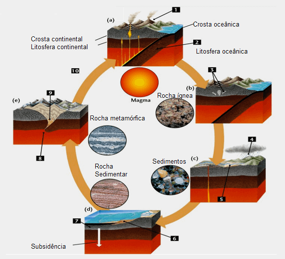
Fonte: Press (2006, p. 112, adaptado).
Vamos iniciar pelo número (1) quando uma placa oceânica mergulha sobre uma placa
continental em direção ao manto, temos a subducção. Isso faz elevar uma cadeia de montanhas vulcânicas, como
nos Andes.
A placa que “afundou” (2) funde-se à medida que mergulha no manto. O magma ascende (sobe) da
placa fundida e extravasa-se como lava ou se introduz com intensidade na crosta.
Após isso, (3) o magma esfria para formas as rochas ígneas: as rochas extrusivas
(vulcânicas) cristalizam do magma ou da lava na superfície; as rochas intrusivas (plutônicas) cristalizam no
interior da crosta.
As montanhas que foram soerguidas (4) (elevadas) vão interagir com a atmosfera. Elas forçam
o ar carregado de umidade a ascender, esfriar, condensar e precipitar.
A precipitação, o congelamento e o degelo criam material solto – sedimento – (5) que é
carregado pela erosão.
Esse sedimento (6) é transportado para o oceano por rios, onde é depositado como camadas de
areia e silte. As camadas de sedimentos são soterradas e sofrem litificação, tornando-se rochas
sedimentares.
O soterramento (7) é acompanhado de um afundamento da crosta terrestre devido à pressão da
própria camada sedimentar.
Nas áreas das margens das placas tectônicas, onde os continentes se colidem, as rochas são soterradas ou
comprimidas com uma extrema pressão (8).
Quando uma rocha sedimentar é soterrada em maiores profundidades na crosta, ela torna-se mais quente e
metamorfiza-se. As rochas ígneas também podem se metamorfizar (9).
E, por fim, outra placa entre novamente no processo de subducção e o ciclo se renova (10).
O ciclo das rochas atua em várias partes do Planeta simultaneamente, ora formando montanhas em uma região, ora
depositando e soterrando sedimentos em outra.
As rochas são recicladas permanentemente ao longo de milhares ou milhões de anos. Podemos observar na
superfície sua manifestação e deduzir por meio de evidências indiretas seu comportamento no interior da
Terra.
Teste seu conhecimento
Quais fatores causam o metamorfismo nas rochas?
Teste seu conhecimento
O magma em ascensão traz energia térmica na crosta, aquecendo a parede das rochas. Ocorre próximo aos limites do magma e novos minerais podem crescer ou aumentar os já existentes. Foi descrito o metamorfismo (de):
Teste seu conhecimento
O aquecimento costuma ser acompanhado de uma força suficiente para causar deformação. Estas forças podem ser resultado de placas tectônicas ou de subducção. Foi descrito o metamorfismo (de):
Não existe pergunta boba! A Ciência é feita de perguntas!
P:
Como o conhecimento científico do ciclo das rochas contribui para entender melhor as paisagens
terrestres?
R: A aparência das paisagens depende e reflete os tipos de rochas matriz
ou rocha base. Por exemplo, na imagem abaixo vemos uma rocha sedimentar formadas por sedimentos e
distribuídas através de camadas. Nesse sentido, o estudo das rochas contribui para os cientistas, geólogos,
geógrafos físicos, geomorfólogos, dentre outros, a visualizarem os padrões espaciais, formas e evolução das
paisagens por meio das cores, texturas e do modo como as rochas estão ou foram fraturadas.
O ciclo das rochas ilustra uma importante relação entre o clima, o solo, os processos tectônicos, erosão,
depósitos minerais fundamentais para a organização do território e da sociedade.
P:
As rochas magmáticas vêm do magma, mas como o magma se forma?
R:
Vamos revisar esse assunto, pois o magma se forma nos locais do manto e da crosta terrestre onde as
temperaturas e pressões são muito altas e são capazes de permitir a fusão parcial de rochas contendo água. O
basalto, por exemplo, pode ser fundido parcialmente no manto superior, onde as correntes de convecção trazem
as rochas quentes para cima ou nas dorsais mesoceânicas.
P:
Qual a porcentagem de rochas no Planeta?
R:
Estima-se que apenas 5% das rochas do Planeta tenham origem sedimentar, cerca de 80% são formadas por rochas
magmáticas e 15% de rochas metamórficas. Entretanto, na crosta terrestre essa proporção se altera. Cerca de
75% são rochas sedimentares, e o restante, 25% formadas por rochas magmáticas e metamórficas.
Desafio em grupo: hipóteses sobre o ciclo das rochas.
Após assistir à animação sobre o ciclo das rochas, compare com a explicação científica sobre as etapas
de transformação que uma rocha pode passar.
Um ponto importante é que o ciclo das rochas ilustra as coisas que podem acontecer a uma rocha. A
maioria delas não completa o ciclo devido a muitos caminhos, interrupções, retrocessos e atalhos que uma
rocha pode tomar.
Instruções:
Forme um grupo com três estudantes;
Reflita sobre o caminho que uma rocha pode percorrer dependendo dos eventos naturais específicos e
a ordem em que ocorrem.
Escreva, ao menos, três diferentes caminhos que uma rocha pode encontrar durante seu ciclo.
Escolha um integrante do grupo para escrever os tópicos na lousa.